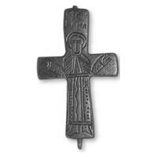

Catalog › CE-0477 · SYR2012-74
Valvă de encolpion (față), cat. 74, NMIU Kiev
sec. X–XI (901–1100) · loc necunoscut · Muzeul Național de Istorie a Ucrainei (НМИУ), Kiev, inv. в 4625/1000 (38426, 755)
single valve of a reliquary cross, altul; c. X–XI (901–1100); find spot unknown; kept at Muzeul Național de Istorie a Ucrainei (НМИУ), Kiev.


Identificare
- Categorie
- Valvă izolată
- Material
- Altul
- Tehnică
- Gravare (incizie)
- Dimensiuni
- Î 60 × L 37 × Gr 3 mm
Iconografie
- Avers
- Neidentificat
- Descriere avers
- În centru, un sfânt în rugăciune (Nicolae?), cu nimb, în veșmânt bogat decorat; chip foarte alungit, schematic. Partea de sus a veșmântului ornamentată cu linii oblice și verticale, la centru și pe mâneci cu amprente de triunghiuri mici; partea de jos cu linii drepte verticale și o linie ondulată; pe margini un rând de triunghiuri mici; marginea tivului și brâul marcate cu linii orizontale. Tălpile în lături. Imagini și inscripții incizate adânc și amprentate. Deasupra capului, inscripție pe două rânduri.
- Inscripții
- OAГ / NH[K]
- Limba
- Greacă
Datare și atribuire
- Datare
- sec. X–XI (901–1100)
- Centru
- Balcani
- Tipologie
- valvă îngustă; sfânt orant
Descoperire
- Context
- Colecție (fără context)
- Coordonate
- 50.4536° N, 30.5164° E
- Precizia locului
- Loc de păstrare (loc de descoperire incert)
Păstrare și referințe
- Colecție
- Muzeul Național de Istorie a Ucrainei (НМИУ), Kiev
- Nr. inventar
- в 4625/1000 (38426, 755)
- Bibliografie
- A. A. Пескова, Л. В. Строкова, Христианские древности Византии в «Сирийской коллекции» Б. И. и В. Н. Ханенко, Sankt-Petersburg–Kiev, 2012, 225 p. [Peskova, Strokova 2012], p. 186, cat. nr. 74, ilustrația (fotografie și desen) de la p. 186.
- Figura
- ilustrația la cat. nr. 74
- Planșe
- Peskova, Strokova 2012, p. 186
- Observații
- Valva anterioară a unei cruci-relicvar cu brațe drepte ușor evazate; subțire, puțin adâncă, rebord vertical ușor teșit, slab marcat pe capete; interior neted; urechea de sus lipsește, cea de jos parțial ruptă. Prin forma (placă neobișnuit de îngustă) și dimensiuni este analogă crucilor de la Iatrus-Krivina (Bulgaria), de la cetatea Pogradec, la sud-vest de Ohrid (Macedonia de Nord), și dintr-o colecție privată din Grecia, toate făcute, după autoare, în Balcani, în imitația crucilor din Orientul Apropiat; cea de față este cea mai nepricepută. Dimensiuni în sursă (în paranteză, înălțimea cu urechile): 5,95 (6,6)×3,7 cm; grosime 0,25–0,3 cm. Atribuirea autoarelor: regiunea balcano-dunăreană, sec. X–XI. Locul descoperirii nu este dat în sursă; aparține anexei II (cruci pectorale de proveniență necunoscută din colecția НМИУ). Material în sursă: aliaj de cupru. Locul descoperirii nu e cunoscut cu precizie; punctul de pe hartă marchează locul de păstrare (Muzeul Național de Istorie a Ucrainei), nu locul descoperirii. Coordonate: nu sunt date în sursă.
Citare: Corpus Encolpiorum, CE-0477, Valvă de encolpion (față), cat. 74, NMIU Kiev, --root/piese/SYR2012-74/ (accesat 2026-10-17).